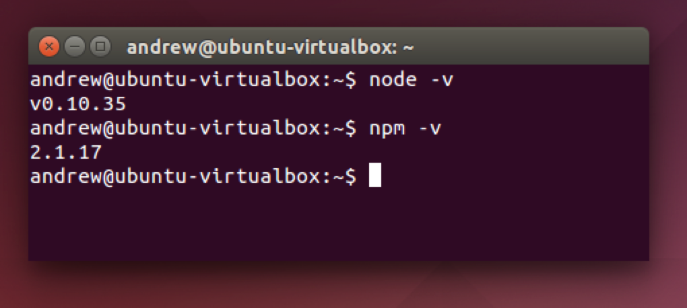

Installing Node.js® and NPM on Linux
What’s Node.js® and NPM?
Node.js® is a JavaScript-based environment which you can use to create web-servers and networked applications. You can also use it to perform helpful tasks on your computer such as concatenating and minifying JavaScript files and compiling Sass files into CSS.
NPM is a “package manager” that makes installing Node “packages” fast and easy. A package is just a code library that extends Node by adding useful features. For example, the “request” package simplifies the process of making HTTP request so you can easily get web resources from other sites.
NPM is installed when you install Node.js®
Prerequisites
- You should have some familiarity with the Linux terminal since you’ll need to use it to install and test Node and NPM. You’ll also need the terminal to use Node.js and NPM.
- Dependencies. You need to install a number of dependancies before you can install Node.js and NPM.
- Ruby and GCC. You’ll need Ruby 1.8.6 or newer and GCC 4.2 or newer.
- For Ubuntu or Debian based Linux distributions run the following command in your terminal
sudo apt-get install build-essential curl git m4 ruby texinfo libbz2-dev libcurl4-openssl-dev libexpat-dev libncurses-dev zlib1g-devand select Y to continue and wait for the packages to be installed. - For Fedora based Linux distributions run the following command in your terminal application
sudo yum groupinstall 'Development Tools' && sudo yum install curl git m4 ruby texinfo bzip2-devel curl-devel expat-devel ncurses-devel zlib-develand select Y to continue and wait for the packages to be installed.
- For Ubuntu or Debian based Linux distributions run the following command in your terminal
- Homebrew. Homebrew is a package manager originally for the Mac but has been ported to Linux – Linuxbrew – it makes installing most open source software (like Node) as simple as writing
brew install node. You can learn more about Homebrew at the Homebrew website and Linuxbrew at the Linuxbrew website. To install Homebrew for Linux open your terminal application and paste in the commandruby -e "$(curl -fsSL https://raw.githubusercontent.com/Homebrew/linuxbrew/go/install)". Follow the instructions in the terminal to complete the installation process.
- Ruby and GCC. You’ll need Ruby 1.8.6 or newer and GCC 4.2 or newer.
Once Linuxbrew is installed. You’ll need add to your .bashrc or .zshrc file the following 3 lines:
export PATH="$HOME/.linuxbrew/bin:$PATH"
export MANPATH="$HOME/.linuxbrew/share/man:$MANPATH"
export INFOPATH="$HOME/.linuxbrew/share/info:$INFOPATH"
Installation Overview
Installing Node.js® and NPM is pretty straightforward using Linuxbrew, the Linux port of Homebrew. It handles downloading, unpacking, compiling and installing Node and NPM on your system. The whole process (after you have Linuxbrew installed) should only take you a few minutes.
Installation Steps
- Open up your terminal and type
brew install node. - Sit back and wait. Homebrew has to download some files, compile and install them. But that’s it.
Test it!
Make sure you have Node and NPM installed by running simple commands to see what version of each is installed:
- Test Node.js. To see if Node.js is installed, type
node -vin Terminal. This should print the version number so you’ll see something like thisv0.10.35. - Test NPM. To see if NPM is installed, type
npm -vin Terminal. This should print the version number so you’ll see something like this2.1.17

How to Update Node and NPM
New versions of Node and NPM come out frequently. You can use Homebrew to update the software it installs.
- Make sure Homebrew has the latest version of the Node package. In Terminal type
brew update - Upgrade Node:
brew upgrade node
How to Uninstall Node and NPM
You can use Homebrew to uninstall packages that it installed:
brew uninstall node